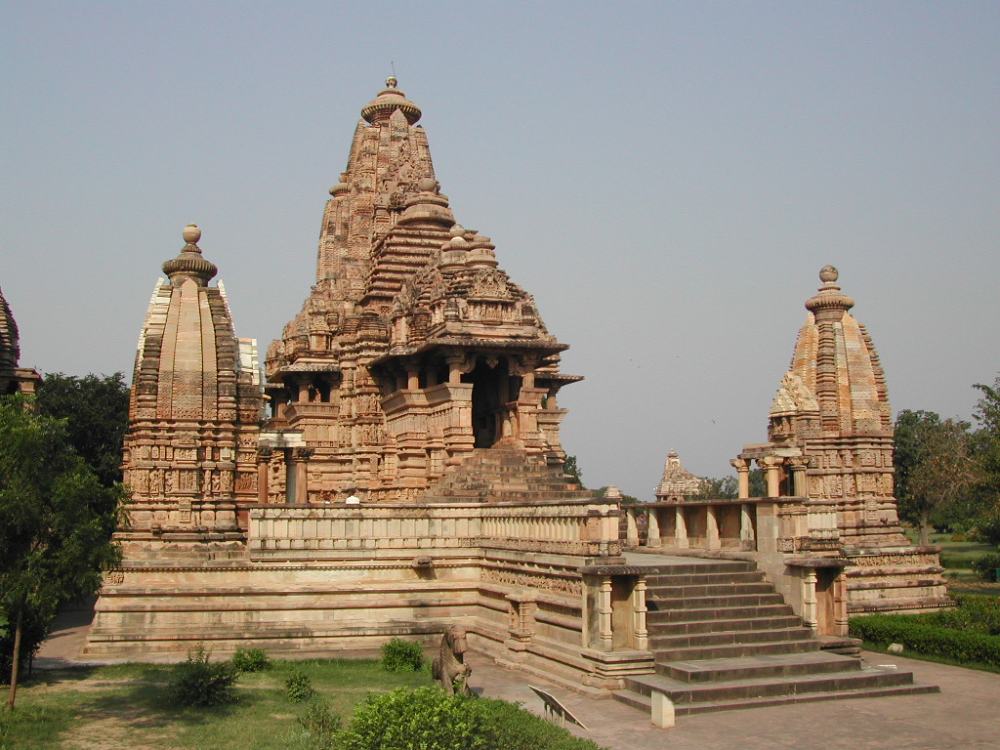
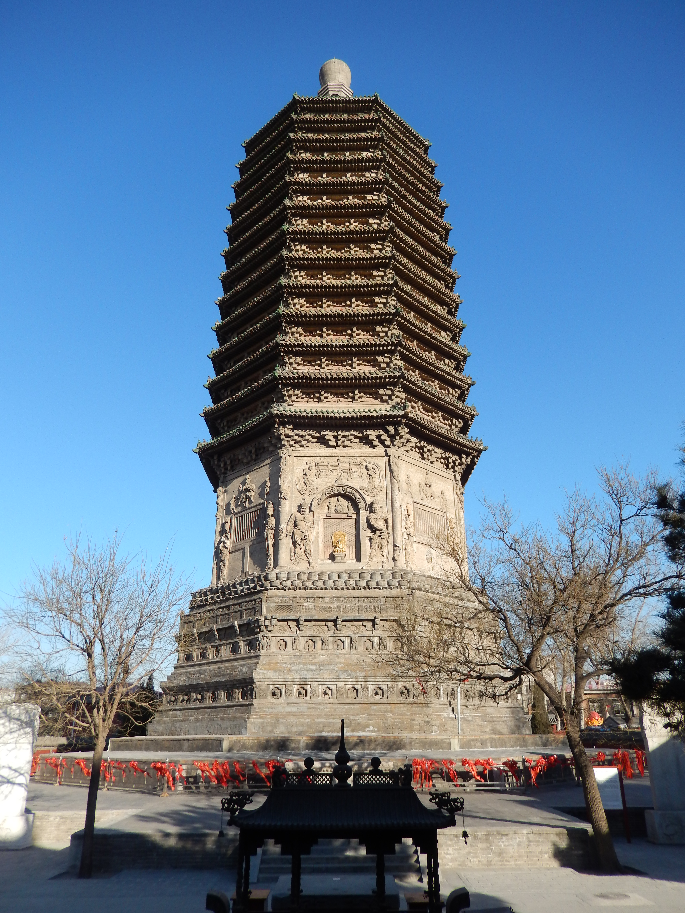
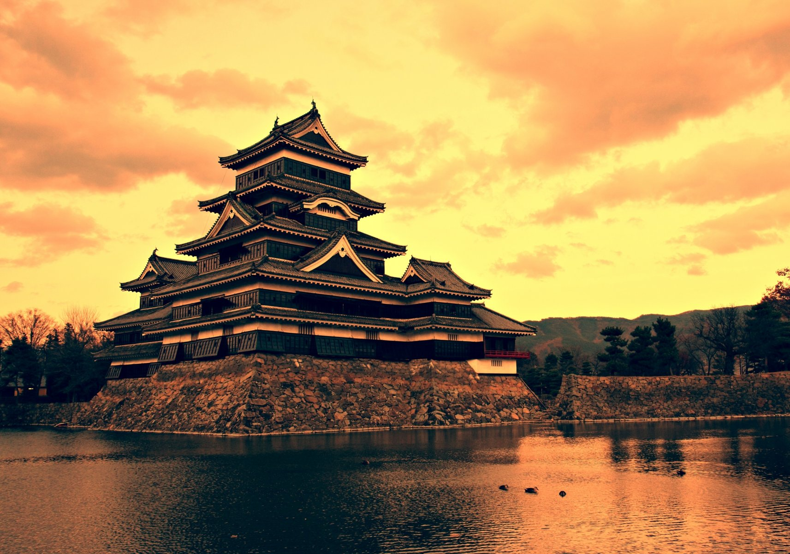

Архитектура Древней Индии
Во времена империи Маурьев и государства Гуптов и их преемников было построено несколько буддистских
архитектурных комплексов, например, в Эллоре, и монументальная Большая ступа в Санчи.
Традиционная система Васту-шастра служит как индийская версия Фэн-шуй, влияющая на городское
планирование, архитектуру и эргономику.
Группа храмов в Кхаджурахо (большинство из которых построены в 950—1050 годах) представляет собой
кульминацию развития средневековой архитектуры в северной Индии.
У большинства храмов общий замысел и план, различия только в деталях. Все храмы симметричны
относительно оси восток-запад. Три храма построены из гранита: Чаусатх-ёгини, Брахмы и
Лалгуани-Махадеви. Все остальные храмы Кхаджурахо сделаны из песчаника, цвет камня варьируется от
тёмно- до светло-жёлтого, встречается розовый. Материал для строительства добывали в городе Панна на
восточном берегу реки Кен.
В больших храмах боковые трансепты украшены окном с балконом для вентиляции. Над балконами размещены
роскошные скульптурные группы, которые показывают сцены из жизни богов. Свет из окон освещает
внутренний центральный зал. Скульптура Кхаджурахо берёт свои истоки из средневековой школы Ориссы, и
превосходит её в изяществе изображения.

Архитектура Древнего Китая
Основным строительным материалом в древнем Китае было дерево. В землю вбивали деревянные столбы,
которые вверху соединялись балками. На этом каркасе затем устанавливались несущие конструкции
кровли, покрываемые впоследствии черепицей. Проёмы между столбами заполнялись кирпичами, глиной,
бамбуком или другим материалом.
Важной особенностью китайской архитектуры является зеркальная симметрия как относительно продольной,
так и относительно поперечной оси. Это символизирует баланс.
Традиционно китайская застройка организуется по принципу сыхэюань при котором четыре здания
помещаются фасадами внутрь по сторонам прямоугольного двора. Так в Китае строились усадьбы, дворцы,
храмы, монастыри и т. д. Обычно здания размещаются вдоль осей север-юг и запад-восток.

Архитектура средневековой Руси
С древнейших времен на Руси преобладало деревянное зодчество, что объяснялось обилием лесов,
нехваткой и трудностью добычи в большинстве регионов строительного камня, относительной дешевизной
дерева. Из дерева строились не только жилые дома крестьян, но и крепостные стены, боярские терема,
княжеские дворцы, церкви. Преимущественно деревянный характер древнерусской архитектуры обусловил то
печальное обстоятельство, что многие архитектурные памятники X—XVII веков оказались утраченными.
Каменное строительство получило определённое развитие с кон. X — нач. XI веков, что было связано с
Крещением Руси, и первоначально преобладало в церковном зодчестве. Первой известной по летописям
каменной постройкой Руси можно считать Десятинную церковь (церковь Св. Богородицы) в Киеве,
сооружённую в первые годы после Крещения Руси, в 989—996 годах, и сочетающую в себе традиции и
приёмы византийской и болгарской церковной архитектуры. Влияние греческих мастеров отчетливо
прослеживается в архитектуре.
Особенностью ранней церковной архитектуры Древней Руси было единство интерьера, достигавшееся за
счёт низких алтарных перегородок, открывавших взору верующих верхнюю часть алтарной части храма. Из
византийской традиции заимствована и традиция украшения внутреннего пространства храмов мозаикой.
Наряду с каменными храмами строились деревянные церкви, которых было большинство. Из дуба, в
частности, был выстроен в 1049 году и первый Софийский собор в Новгороде — предшественник
белокаменной Софии. Историки архитектуры расходятся во мнениях относительно того, какими были
взаимоотношения каменной и деревянной архитектуры, какая из них оказывала влияние на развитие
другой. Вероятней всего, влияние было двусторонним. Небольшие сельские храмы строились по типу избы,
в основе которой всегда лежит венец из четырёх бревен, образующих при соединении квадрат или
прямоугольник, а вся изба представляет собой несколько венцов, наложенных друг на друга — сруб,
покрытый двускатной или четырёхскатной крышей. Этот принцип сохранялся и в более сложных сооружениях
— теремах, дворцах, крепостных башнях. Иногда вместо четырёхугольного сруба (четверика) сооружался
восьмиугольный сруб (восьмерик). Принцип соединения четвериков и восьмериков прослеживается и в
каменной архитектуре Руси вплоть до Нового времени.

Архитектура Японии
В архитектуре Японии заметны заимствования из китайской архитектуры. В отличие от китайских и
созданных в Японии под влиянием китайского стиля зданий, для типично японских сооружений характерна
асимметрия. В целом, для японской архитектуры характерно стремление к простоте. Постройки светлые и
открытые, в основном состоят из прямоугольных элементов.
Для традиционной японской архитектуры вплоть до периода Мэйдзи основным строительным материалом
являлось дерево. Причинами использования деревянных конструкций были доступность и простота
изготовления. Изогнутые крыши в первую очередь связанны с тем, что они сделаны из свежего бамбука.
При засыхании бамбук закручивается и становится твёрдым. Кроме того, деревянные конструкции лучше
подходили для японского климата, позволяли обеспечить естественную вентиляцию помещений, а также
позволяли легко переместить сооружение, разобрав его и собрав на новом месте.
Традиционные деревянные жилые дома простых японцев, называемые минка (яп. 民家), максимально
приспособлены к климату страны. Одно- или двухэтажная минка имеет прочную каркасную конструкцию из
толстых балок с несущей колонной в центре дома и раздвижными дверями. Стены не являются несущими,
внутреннее пространство делится на отдельные помещения с помощью передвижных ширм. В таких домах
жили крестьяне, ремесленники и торговцы. В настоящее время минка сохранились только в сельской
местности.
